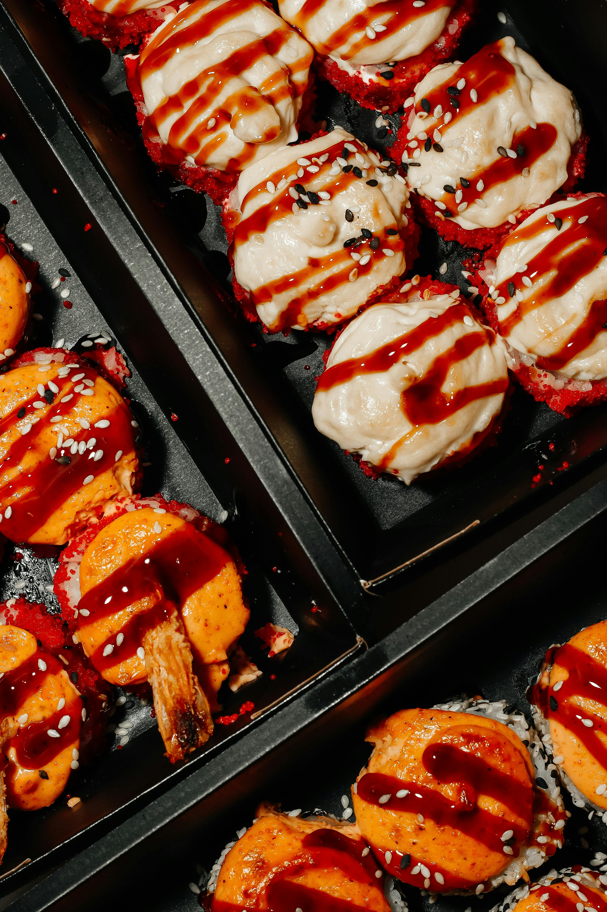

Home
Takoyaki

Description
Les takoyaki sont des petites boulettes japonaises de pâte moelleuse, garnies de morceaux de poulpe, cuites dans un moule spécial et servies avec sauce et bonite séchée.
Ingrédients
- Pâte (farine, œuf, dashi)
- Poulpe cuit
- Oignon vert
- Gingembre mariné
- Tempura croustillant
- Sauce takoyaki
- Mayonnaise japonaise
- Flocons de bonite